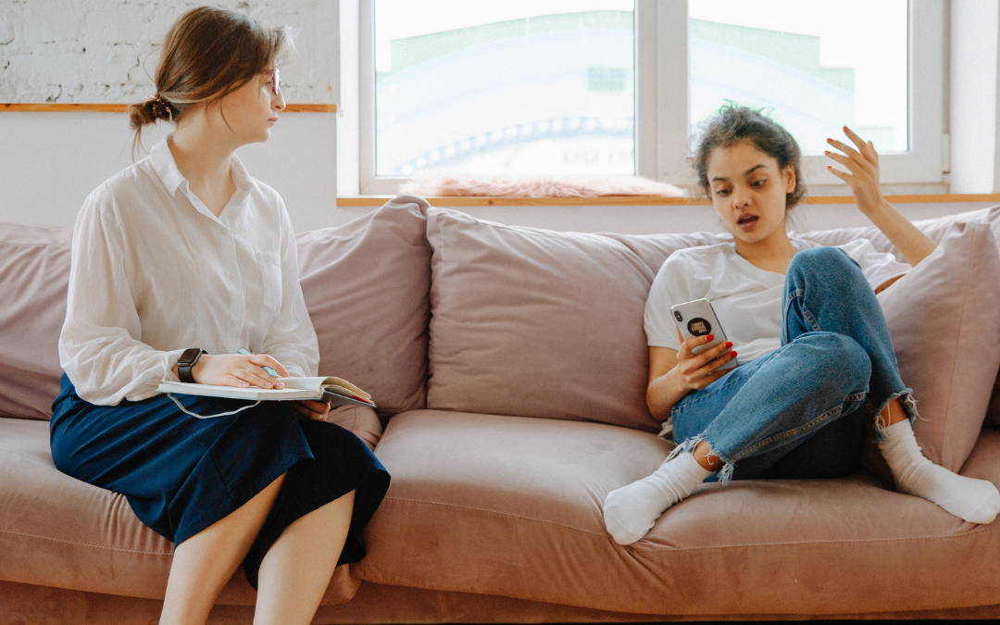
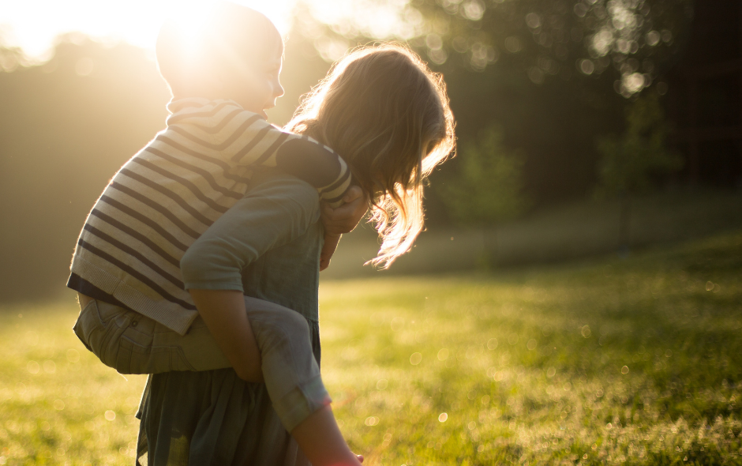
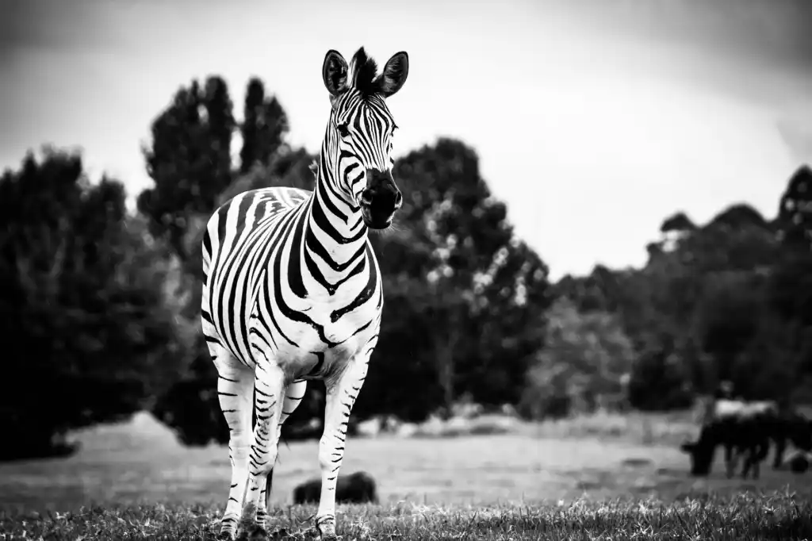

Valérie Moret
Dayaaluta
Coaching et parentalité
Soutient Parental
Coaching enfants, ados et adultes
haut potentiel et hypersensible
Soutient Parental
Coaching enfants, ados et adultes
haut potentiel et hypersensible
Depuis 2018, je suis coach spécialisée dans l’accompagnement parental, la confiance en soi et le haut potentiel/hypersensibilité.
Etant moi-même maman (hypersensible) de trois garçons, j’ai traversé des difficultés qui m’ont fait grandir et qui me rendent humble et compréhensive vis-à-vis des autres parents.
| Enfant, ados, adultes | Haut potentiel et/ou hypersensible | Coaching parental |
|---|---|---|
| Avoir confiance en soi, c’est : se sentir capable, oser être soi-même, croire en soi, comprendre ses émotions, être en conscience. | Découvrir que son enfant est zèbre ou que vous l’êtes vous-même à l’âge adulte peut être déstabilisant. Vous revoyez le passé sous un angle nouveau et il peut être difficile de savoir quoi faire de cette information ou comment accompagner au mieux son enfant. | Est-ce que vous vivez une situation difficile avec votre/vos enfant(s)/ado(s) et vous ne trouvez pas comment en sortir ? Est-ce que vous cherchez à vivre votre parentalité plus sereinement ? |
| Coaching famillial | Coaching HP et/ou hypersensible | Coaching parental |
|  |  |  |
|---|---|---|
| Ateliers "Parler pour que les enfants écoutent, écouter pour que les enfants parlent" | Aleliers "Frères et soeurs sans rivalité" | Formation "Accompagner mon enfant HP et/ou hypersensible |
| Vous avez envie de mieux comprendre votre enfant/ado, de trouver des outils de communication qui amélioreront votre vie de famille au quotidien, d’améliorer la confiance en soi de votre enfant ? | Comment gérer les conflits entre frères et soeurs ou dans un groupe d’enfants, sans empirer leur relation. Aider les enfants à s’épanouir dans la fratrie/le groupe et à exprimer leurs sentiments. Apaiser les jalousies et rivalités. | Chaque enfant est unique et je suis contre les étiquettes qui enferment une personne dans un rôle. Toutefois, mon parcours m’a amené à faire une place à ces diagnostics, non pas pour cataloguer, mais dans l’optique de mieux comprendre le fonctionnement d’une personne et ainsi pouvoir avancer plus sereinement. |
| Suivre ces ateliers | Suivre ces ateliers | Suivre la formation |
Valérie Moret - Dayaaluta Coaching
Rte du Stand 11
1880 Bex